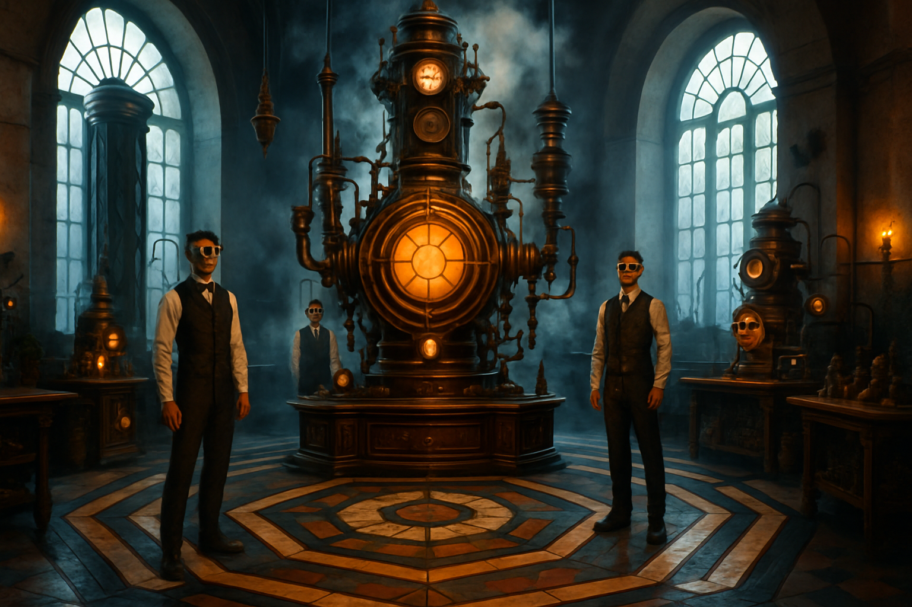

A Heptaverse Setting
A Ribhian Games 2d10 Heptaverse Setting
The Core
The Core is the source realm of the Heptaverse — the maintenance point for all of reality. Nexus Prime is a vast, verdant planet near the galactic centre, its shape vaguely heptagonal, its skies lit by three stars and haunted by the slowly rotating black hole Ek' Chuah, visible at all hours except the deepest dark of night. Its native geography mirrors the lowlands, highlands, mountain ranges, rivers, jungles, and swamps of a Mayan civilisation writ cosmic — dense with life, treacherous with beauty.
What appears to be brass-and-steam engineering is in truth something far older. The great gears turn. The copper pipes carry pressure. The instruments measure and calibrate with precision. But the technology of The Core is ritual disguised as machinery — ancient cosmic maintenance performed by engineers who believe they are technicians, and shamans who know exactly what they are doing. Both are right. Both are necessary.
A sprawling brass-and-steam metropolis built around the Great Server — a seven-sided Mayan ziggurat humming with gears, steam pipes, and clicking mechanisms that maintain reality across all seven Heptaverse settings. Its engineers are custodians who believe they perform technical maintenance. They are performing ritual. The city draws indigenous peoples, travellers from other realms, and the custodial orders that keep the Great Server running.
Bubble realms extending from The Spire to the equator — each a contained microcosm of one of the seven Heptaverse settings, separated by cosmic force barriers only certain entities and custodians can open. They serve as both analytical laboratories observing travellers from the other realms and as sources of influence, ideas, and creatures that flow outward into the wider Heptaverse. The Core Manifold is where training and experiments are performed on travellers and natives alike.
A primordial jungle oasis at the southern nexus of Nexus Prime, home to a giant crystalline construct — The Fountain, the wellspring of creation from which all realities flow. Its custodians are shamans and witchdoctors of a more native and ancient character than the engineers of The Spire, tending the source of all creative energy through ceremony and ritual that has never been mistaken for anything else. The Outlands surrounding it are home to the indigenous peoples of Nexus Prime: village communities built around jungle temples, periodically raided by parties from The Spire.
The two traditions of The Core — Metropolitan Engineers working the Great Server through technical protocols, and Outland Keepers tending The Fountain through ancient ritual — access the same underlying cosmic mathematics through entirely different cultural frameworks. The Harmonic Pattern System is The Core's unique mechanic: seven fundamental pattern families governing reality maintenance, each expressed through brass calibration instruments in the city and through stone, water, and ceremony in the Outlands. Neither tradition knows the full truth. Master practitioners of both eventually begin to suspect it.
Player characters may walk either path — the Staticist, Harmonist, or Dynamist Engineers of the metropolitan tradition, each aligned differently to the Flux/Anchor balance that underlies all pattern work; or the Stone Keepers, Balance Walkers, or Water Shapers of the Outland tradition, who perform the same cosmic work through ritual, dance, and the reading of sacred materials. The most powerful characters in The Core are those who eventually discover that the brass gear and the flowing water serve the same purpose — and learn to speak both languages at once.